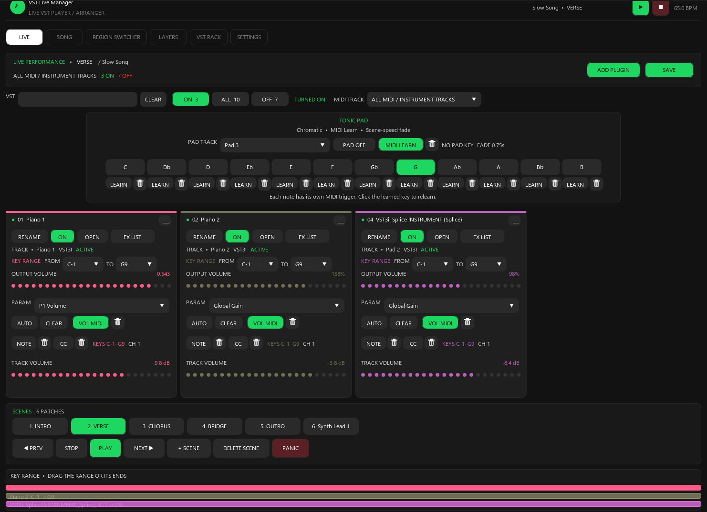
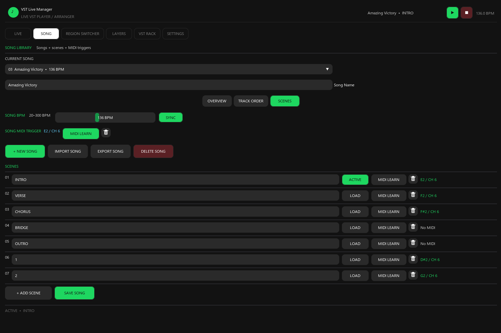
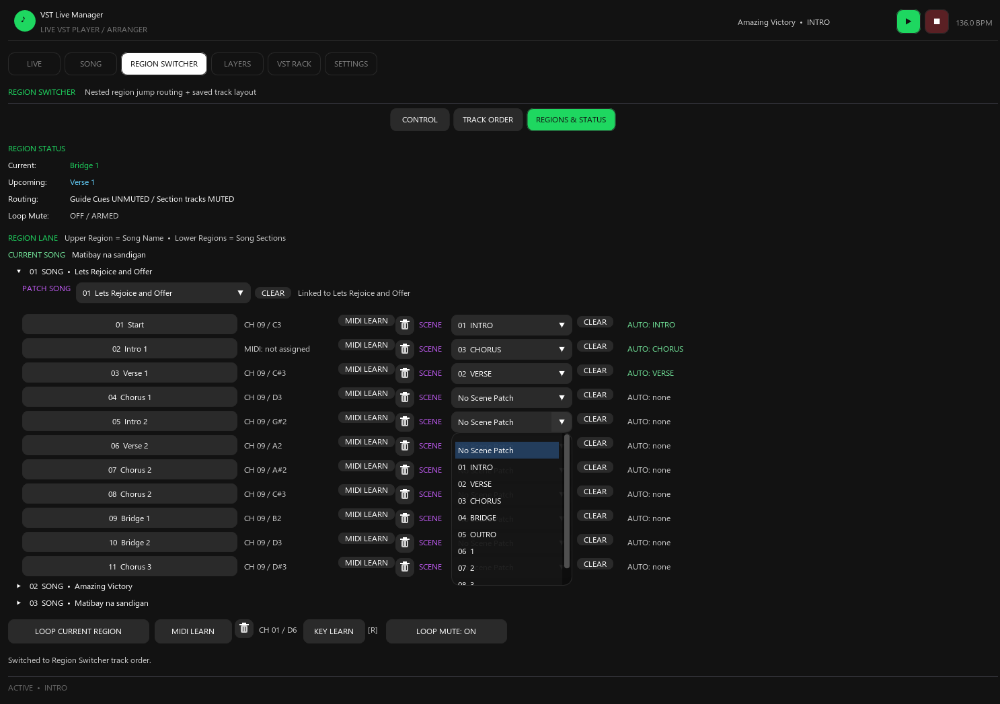
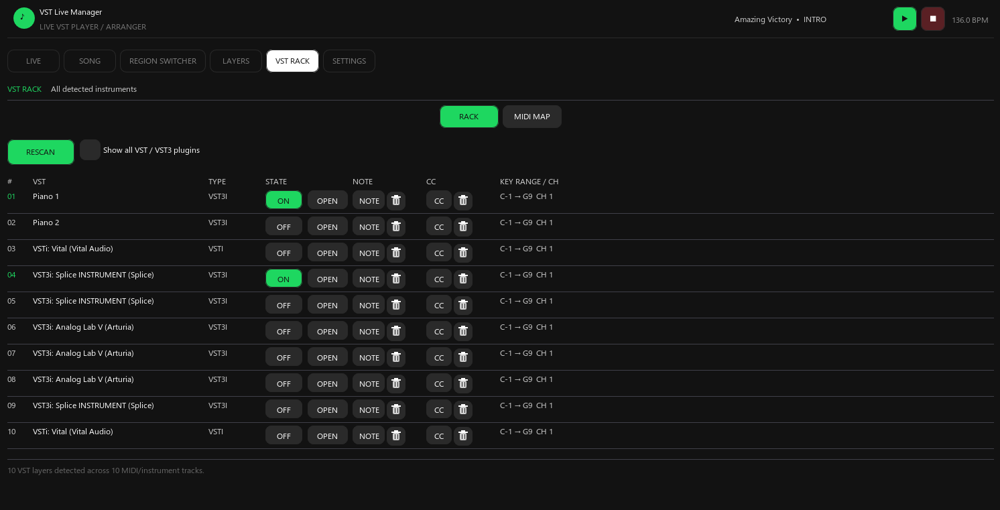
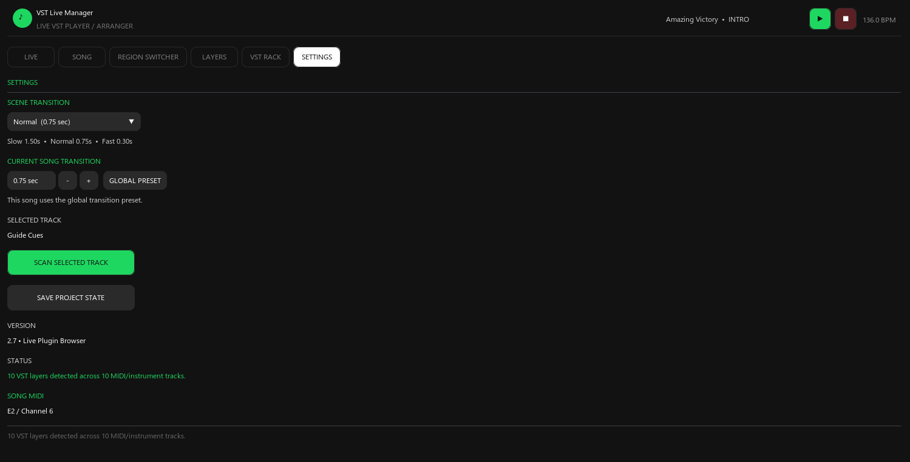

REAPER · LUA · REAIMGUI
Your whole live rig, one window
VST Live Manager turns REAPER into a performance instrument. Control every layer, switch songs and scenes from your keyboard, and let nested region routing handle the jumps — without touching the mouse mid-set.
REAPER 7.x · Windows & macOS · Perpetual license · No subscription

6
Workspaces
8
Performance slots
16
MIDI channels
50+
Features and controls
Why it exists
Live sets break in the gaps between songs
VST Live Manager was built for the parts of a performance that have nothing to do with playing: the patch change, the mixer reshuffle and the section jump you did not plan for.
Patch changes eat the downbeat
Loading instruments by hand between songs is where sets go wrong. VST Live Manager keeps the whole rig in one window and switches it for you.
Every song wants a different mixer
Song A runs piano, pad and strings. Song B runs organ and synth. Each song saves its own track 1-8 order, so the mixer follows the set list.
One wrong jump and the track is naked
Nested region routing detects non-adjacent jumps and re-routes the guide cues before you land, so the click and the band stay together.
Six workspaces
One window for the whole performance
The manager is built from six tabs. Each one handles a different part of a live keyboard rig, and they all share the same song, scene and MIDI state.
Every layer, one screen, mid-song
The performance board. Search the whole plugin list, flip instruments on and off, and see exactly what is running before the downbeat.
- Search the VST list and filter it by ON, ALL or OFF
- One card per instrument with its own pastel accent, volume, key range and MIDI channel
- 8 performance slots with add and replace, so a broken chain is a two-click fix
- SAVE writes the scene without ever toggling your live VST states
A set list that remembers everything
Each song carries its own tempo, its own mixer layout, its own scenes and its own MIDI trigger. Changing songs changes the whole rig.
- Per-song BPM from 20 to 300, with SYNC straight to REAPER
- MIDI learn a song to a note and channel for hands-free changes
- Per-song track 1-8 order, saved separately from the Region Switcher layout
- Import and export .vlsong files to move a whole song between projects

Routing that follows where you actually jump
Nested region detection with automatic track routing. Jump from Verse 1 straight to the Bridge and it re-routes before you land.
- Tells container regions apart from the musical leaf regions inside them
- Non-adjacent jump detection with Guide Cues mute and unmute logic
- Click and metronome tracks are excluded from musical routing
- Loop mute, loop current region, and region to song to scene patching
- Keyboard and MIDI shortcuts for region order, live song order and loop

Deep per-layer control, and the filters are real
The Layers editor sits on every instrument. Key range is enforced by an internal JSFX filter in the MIDI path, not just as a visual limit.
- Three separate MIDI concepts per layer: a note for on/off, a CC for on/off, and a CC for volume
- Transpose and key range are per layer, so stacked instruments can sit in different registers
- Volume reads the plugin's own gain parameter rather than inserting an extra FX
Key range
Set LOW and HIGH anywhere in MIDI 0-127 with musical note names. An internal JSFX key range filter is placed before the instrument, so blocked notes never reach it.
Transpose
Shift each layer from -24 to +24 semitones independently of the others.
MIDI channel
Assign any layer to channels 1-16, so one keyboard can drive several instruments at once.
Volume
From -60 dB to +6 dB. The script searches the plugin for Volume, Master Gain or Output Level and drives that parameter directly.
Pan
Place every layer from -1 to +1 across the stereo field for a wider live mix.
MIDI learn
Learn a note or CC to toggle the layer, or a separate CC to ride its volume continuously.
Every instrument and every mapping at once
The rack lists all detected instruments with their state and assignments. The MIDI MAP view shows your note, CC and volume mappings in one table.
- Detects VST, VSTi, VST3, VST3i, AU and CLAP, with name-based fallbacks for odd reports
- Columns for state, note, CC and key range with channel
- ON, OFF and OPEN per layer without leaving the rack
- RESCAN picks up plugins you add while REAPER is still running

Transitions and project state, under control
Set how long scene changes take, override it per song, and keep the project state saved so a set survives a restart.
- Three global transition presets: Slow 1.50 s, Normal 0.75 s, Fast 0.30 s
- Per-song transition override that saves with the song
- SCAN SELECTED TRACK refreshes layers after you change a plugin chain
- SAVE PROJECT STATE writes songs, scenes, MIDI maps, track GUIDs and region mappings into the project

Getting started
Running in three steps
The manager is a single script. There is nothing to compile, no host application to install and no server to run.
- 01
Install the script
Drop the .lua into your REAPER Scripts folder and run it from the Actions list. You also need the ReaImGui extension, which installs in one step.
- 02
Scan and learn your rig
Scan your tracks, then MIDI learn your songs, scenes and layers to the keys and CCs you already reach for.
- 03
Play
Switch songs from the keyboard, trigger scenes, and let region routing handle the jumps for you.
MIDI control
Everything you would reach for, learnable
Every control below has its own MIDI learn button. Play the key or move the CC and it is bound, with its channel stored alongside it.
- Song changeMIDI note + channel
- Scene changeMIDI note + channel
- Layer on / offMIDI note
- Layer on / offMIDI CC
- Layer volumeMIDI CC
- Region triggerMIDI note + channel
- Region Switcher toggleMIDI note
- Loop current regionMIDI note + key
- Region order / live song orderMIDI + keyboard
- Tonic Pad noteMIDI note per note
- Tonic Pad toggleMIDI note
Compatibility
What you need before you buy
If REAPER can host your instruments, this runs. There is no separate host application and no subscription.
- Required
REAPER
7.x
- Required
ReaImGui
Extension, installed once
- Required
Lua scripting
Built into REAPER
- Supported
Operating system
Windows and macOS
- Supported
Instruments
VST, VSTi, VST3, VST3i, AU, CLAP
- Not required
Subscription
One-time purchase, perpetual license
Pricing
One license, paid once
No subscription, no per-song limits and no seat-based pricing. Buy it once and run it on your live rig.
Single license
$29/ perpetual
VST Live Manager v2.7 for REAPER.
- Perpetual license for VST Live Manager v2.7
- All six workspaces: Live, Song, Region Switcher, Layers, VST Rack, Settings
- Instant download of the .lua script after checkout
- Windows and macOS
- Free 2.x updates
Secure checkout via Creem · Instant download
By purchasing you agree to our Terms of Service and Privacy Policy.
Questions before buying? Email zapow40sikat1172@gmail.com
Questions
Before you commit a set list to it
The practical details: what it needs, what it does to your existing project, and what arrives after checkout.
Ready for the next set
Stop managing patches and play
$29 once. Every workspace, every song and every mapping on your machine.